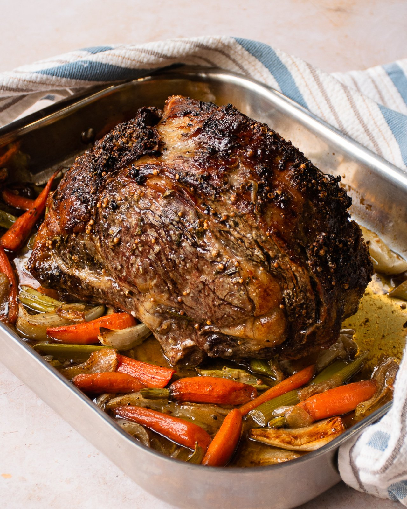

Rib Roast

This is a great recipe for the holidays.
Ingredients
- 1 (3-4 pound) bone-in rib roast
- 1 tablespoon kosher salt
- 1 teaspoon freshly ground black pepper
- 1 tablespoon olive oil
- 1/4 cup butter
- 1 onion, chopped
- 2 cloves garlic, minced
- 1/2 cup dry red wine
- 1 cup beef broth
Instructions
- Preheat oven to 400 degrees F (200 degrees C).
- Season the roast with salt and pepper.
- Heat the olive oil in a large roasting pan over medium-high heat.
- Sear the roast on all sides until browned.
- Remove the roast from the pan and set aside..
- Add the onion and garlic to the pan and cook until softened, about 5 minutes.
- Add the red wine and beef broth to the pan and bring to a boil.
- Return the roast to the pan and roast for 2-2 1/2 hours, or until a meat thermometer inserted into the thickest part of the roast registers 120 degrees F (50 degrees C).
- Remove the roast from the oven and let it rest for 15 minutes before carving.